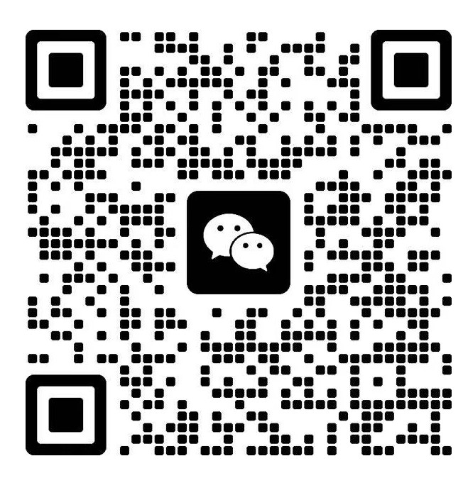
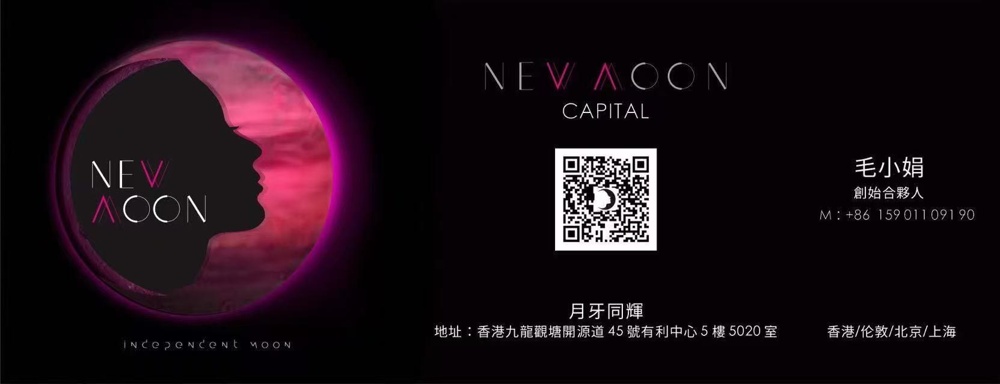

04 / CONTACT
从一次对话开始.
加我微信，先说说你的情况。
从一个具体问题，开始一次对话。
LET’S TALK.
JOYCE MAO
01 / WECHAT
加我微信
加好友时，可以告诉我你正在做什么，以及最想聊的一个问题。

JOYCE MAO / 个人微信
在手机上可长按或保存二维码，再用微信识别。
02 / KEEP IN TOUCH
关注「月牙小姐」
我会写自己实践一人公司的思考，也记录顺德美食与数字游民的日常。


打开完整名片 · 扫码关注公众号